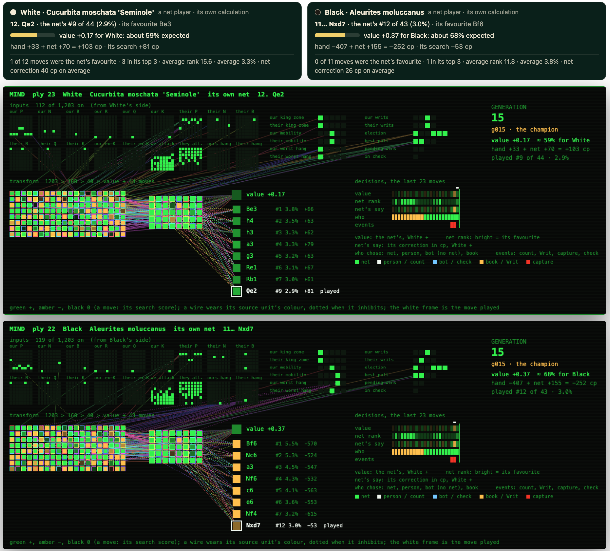
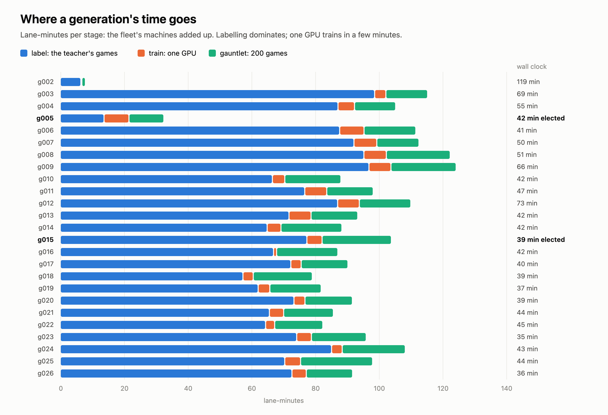
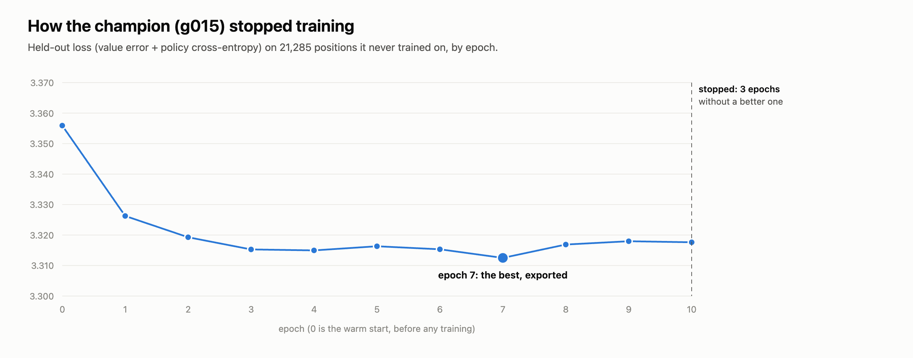

3 · The trained net
Parliament Chess’s own net
A small neural net trained only on this game: on positions from its own games, each scored by a search that looks one move deeper than it can. A fleet of machines trained it generation by generation, and a new generation takes the crown only by beating the old one in 200 games. Its maker’s verdict: “It consistently beats me as a human.”
The film: the net reads the classics
tools/classics.php); the Opera Game chapter is recorded live from the real client.How it sees: reading MIND

Every time the net moves (or reads someone else’s move), the game draws MIND: the end state of its computation, in the phosphor style of the Orrery console.
- Inputs, 1,203 switches. Eighteen 8×8 boards seen from the side to move (its pieces, the opponent’s, former Kings, every square each side attacks, every piece left hanging) and 51 summaries: pressure on each King, mobility, the worst piece hanging, Writs, the election. About 100 are on.
- The transform, 1,203 > 160 > 40. Each lit switch adds its row of learned weights into 160 units; 40 more mix them. Every unit is a square framed in its own colour, filled by its sum.
- Two heads. The value says who is winning (a correction to the hand-written evaluation); the policy gives every legal move a probability.
- A search decides. Two moves deep, plus one for every check. A move’s square takes the colour of the search’s score, and the white frame marks the move played.
a wire wears its source unit’s colour, dotted when it inhibits
decisions: one column a move — value, net rank, its correction, who chose, what happened

Six classics through its eyes
Every move of six famous short games is legal Parliament Chess (no Writ can be filed before move 10, and none is ever forced), so we replayed them through the champion, generation 15. At each of the 113 positions it read history’s move and ranked it, and three players said what they would have played: the net as the lobby plays it (2 plies), the same net one ply deeper, and Medium with no net (the hand-written evaluation alone).
Would it play the winner’s moves?
| Game | Plies | Winner's moves | Policy #1 | Net, 2 ply | Net, 3 ply | No net | Final mate |
|---|---|---|---|---|---|---|---|
| Fool's Mate | 4 | 2 | 0 | 2 | 1 | 1 | Qh4#: policy #28, found by all three |
| Scholar's Mate | 7 | 4 | 0 | 2 | 2 | 2 | Qxf7#: policy #8, found by all three |
| Légal's Mate, 1750 | 13 | 7 | 2 | 2 | 4 | 3 | Nd5#: policy #18, found by all three |
| Réti–Tartakower, 1910 | 21 | 11 | 1 | 6 | 7 | 4 | Bd8#: policy #14, found by all three |
| The Opera Game, 1858 | 33 | 17 | 2 | 11 | 11 | 7 | Rd8#: policy #24, found by all three |
| Lasker–Thomas, 1912 | 35 | 18 | 1 | 8 | 9 | 8 | Kd2#: policy #35, found by all three |
| All six | 113 | 59 | 6 (10%) | 31 (53%) | 34 (58%) | 25 (42%) | 6 of 6 found by all three |
The policy’s first hunch is history’s move only one time in ten: it is a move-ordering prior, nearly flat (its favourite rarely gets more than 3%). With a search behind it, the net plays the winner’s move about half the time, ahead of the hand-written player, and one more ply helps a little more.
The decisive moments
| Game | The moment | Task | Policy rank | Net, 2 ply | Net, 3 ply | No net |
|---|---|---|---|---|---|---|
| Fool's Mate | 2…Qh4# | find it | #28 of 30 | ✓ Qh4 | ✓ Qh4 | ✓ Qh4 |
| Fool's Mate | 2.g4?? | avoid it | #18 of 19 | ✓ e4 | ✓ e4 | ✓ a4 |
| Scholar's Mate | 3…Nf6?? | avoid it | #1 of 28 | ✓ g6 | ✓ g6 | ✓ Qf6 |
| Légal, 1750 | 5.Nxe5!? | find it | #30 of 35 | ✗ d4 | ✗ a4 | ✗ h3 |
| Légal, 1750 | 5…Bxd1?? | avoid it | #4 of 38 | ✗ Bxd1 | ✓ dxe5 | ✗ Bxd1 |
| Réti–Tartakower, 1910 | 8…Nxe4?? | avoid it | #45 of 47 | ✗ Nxe4 | ✗ Nxe4 | ✗ Nxe4 |
| Réti–Tartakower, 1910 | 9.Qd8+!! | find it | #29 of 43 | ✗ Nf3 | ✓ Qd8 | ✗ Nf3 |
| The Opera Game, 1858 | 13.Rxd7! | find it | #44 of 61 | ✗ Qh3 | ✗ Qa4 | ✗ Bxd7 |
| The Opera Game, 1858 | 16.Qb8+!! | find it | #49 of 55 | ✓ Qb8 | ✓ Qb8 | ✓ Qb8 |
| Lasker–Thomas, 1912 | 10…Qe7? | avoid it | #5 of 36 | ✓ Be7 | ✓ Bxe5 | ✓ Bxe5 |
| Lasker–Thomas, 1912 | 11.Qxh7+!! | find it | #8 of 66 | ✗ Nd6 | ✗ Nxf6 | ✗ Nxf6 |
✓ means the player found the move (find it) or did not play the blunder (avoid it); beside each mark, the move that player chose. Three things stand out:
- Forcing moves, yes. Every final mate, all six, is found by all three players, though the policy ranks them as low as #35. Morphy’s 16.Qb8+!! is found because it is check: the search extends a ply for every check and sees the mate behind it.
- Quiet depth, no. Lasker’s 11.Qxh7+!! (mate in eight) and Morphy’s 13.Rxd7! are beyond every player here; Réti’s 9.Qd8+!! needs the third ply.
- The hunch can be wrong; the search saves it. In Scholar’s Mate the policy’s own favourite is the losing 3…Nf6??, and the search plays 3…g6 instead. In Légal’s trap the 2-ply net takes the Queen (5…Bxd1??) like Saint Brie did in 1750; one ply deeper, it doesn’t.
See it yourself: the lobby’s The classics card replays any of them with the net reading every move. The full measurements, every position’s trace included, are in docs/data/classics.json.
How it was trained: the queue

Parliament Chess trains on a fleet of machines shared with other projects, through an Orrery queue. Its planner (bin/orrery-gen.php) runs beside the other projects’ and keeps only a few Parliament jobs waiting at a time. A generation is a chain of jobs:
- pc-prep, once per machine and code version: the committed code unpacked, the tests run, the Rust labeller built, a PyTorch environment on GPU machines. Only committed code reaches a lane (“commit to ship”).
- pc-label, 30 jobs on CPU lanes: games played with the current champion, every position scored by a teacher search one ply deeper than the player. The labeller is the engine ported to Rust, checked against PHP with zero differences on 1,218 positions.
- pc-train, one job on a GPU lane (a GTX 1080 Ti): the new net, warm-started from the champion, fitted to the last few generations’ labels, with early stopping on held-out games.
- pc-gauntlet: the challenger plays the champion, 200 games on CPU lanes.
- The verdict: elected only if it beats the champion by more than two standard errors (z > 2) and holds an election in its games. Every verdict commits itself to this repository; an elected net lands in
models/, and the next generation labels with it.
The timeline: twenty generations

Each dot is a generation’s verdict against the champion of its day. The first three were not elected: two lost to the plain hand-written player and the third edged it, 52.5%, without clearing the bar. Generation 5, the first to label in Rust, beat it 57% and was elected. Nine challengers then played generation 5 to within two standard errors, until generation 15, the first trained with early stopping, beat it 61.8% (z +3.78). Since then the challengers have played generation 15 close to level. The long gap on November 21 follows generation 9’s setup failing on every lane; it waited to be re-pinned, and since then only committed code ships (Lab Report XIII).
Where the time goes

Labelling is most of the fleet’s work, spread over many lanes; training on one GPU takes a few minutes; the gauntlet comes second. From the first job to the verdict, a generation takes about 40 minutes of wall-clock time. The bars are lane-minutes, the machines’ time added up; each stage runs on several lanes at once, so the wall clock on the right is far shorter than the bars.
When to stop training

The champion’s own training run. Its held-out loss (value error plus policy cross-entropy, on games it never trained on) fell for seven epochs and then rose: the net had started to memorise. Training stopped after three epochs without a better one, and the best epoch, 7, was exported. Before early stopping, every generation exported its last epoch.
Every generation
Straight from docs/data/generations.json, which every verdict commits; this table reads the newest copy.
| Generation | Against | Score | z | Verdict | Labels | Elections | Minutes | Decided (UTC) |
|---|
Play it, or watch it think
Run the game (make up, then the guide) and pick Play the neural net, Watch it think, Net against net or The classics. It sees two moves ahead, plus one for every check: quiet three-move plans and a well-timed Writ are how you beat it. Every technical detail, from the sensors to the trainer’s losses, is in the technical write-up and the lab reports (VIII to XIII).